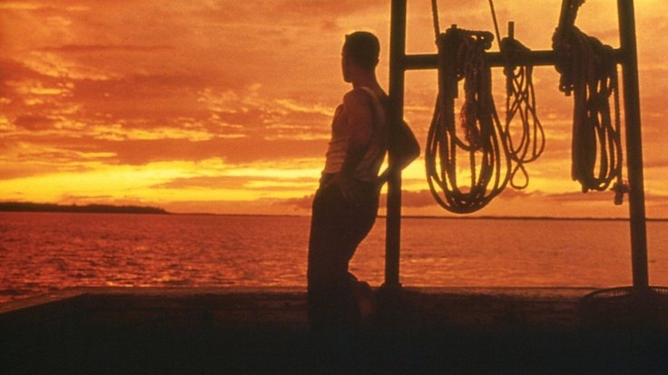
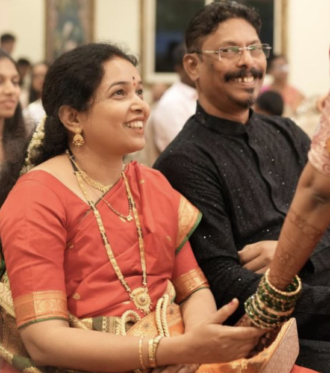
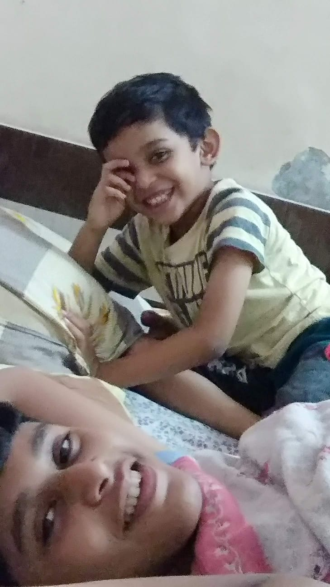
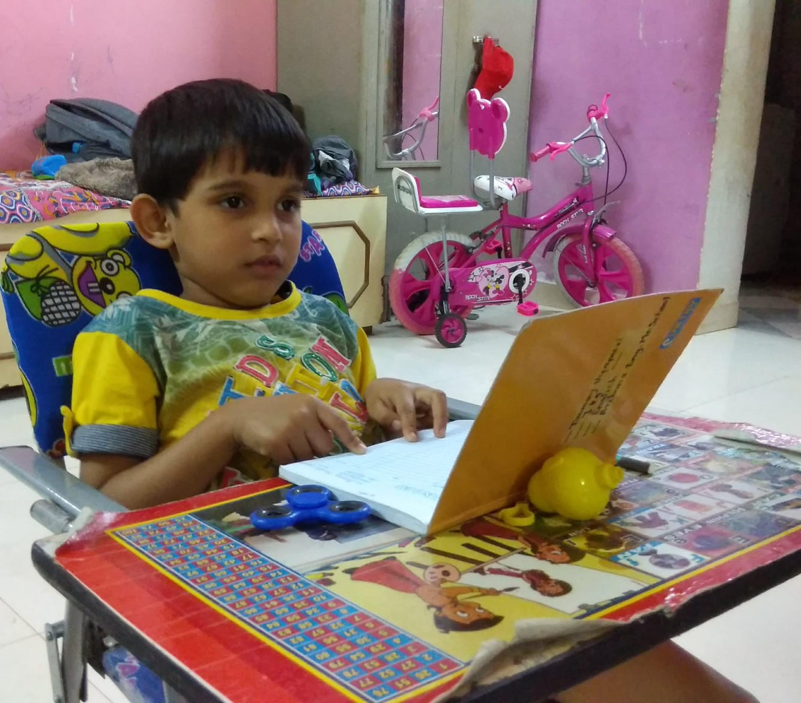
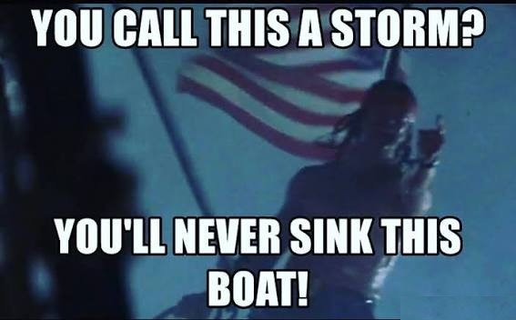

"value"

“You’ll never sink this boat.”
Life
As you might have noticed I have used the word "value" 3 times in my about section, this blog explains why
We were thrown on a rock, as a stupid, weak and powerless blob of matter that somehow got conscious. It wasn't our choice, our parents just decided to make us exist, they had their reasons but not their fault and I don't like to blame parents for creating us as I will explain further how even the pain and suffering that we normally experience out of life are beautiful and valuable.
I consider myself what you may call an optimistic nihilist, meaning I don't think that there is any meaning to life or a reason to live but in an optimistic way. Most nihilists see that the glass is empty so it's all sad and melancholic for them. I see that I have an empty canvas where I can paint anything.
There is no meaning to life so you make one of your own, there is no water in the glass so you can add juice, soda (or liquor if you drink), your canvas is empty so you can color it with whatever color that you like. This is a universal freedom which gets ignored by most of us because we limit our thinking with our own biases and eccentricities.
what matters and what doesn't
I have a set priority order according to which I plan my actions.
The priority order goes something like this:
- Family
- Career
- Health
- Friends
This list also directs my actions in the most direct way possible. I don't like to put myself and my thoughts out there as much, I cherish my solitude and the absolute privacy and autonomy that comes with it. Which I feel most of the extroverts miss upon. Don't get me wrong, I like to talk to people and I enjoy knowing different perspectives and stories also. Hence, I am an ambivert. But I don't see the value in which it would satisfy the needs of the above list. Only things that affect the above listed things can affect me in any way at all.
Reasons to live
You may ask me, "So Aryan, you say there is no meaning to live a life. Does that mean that you're suicidal or something?". No I haven't NOT considered to kill myself, not out of the depressive suffering that life throws at you but generally as a thought experiment. And immediately I went to its practical consequences. My parents' lives would be turned into hell, it will also devastate my brother's life.



Everyone else, friends and relatives, would grow out of it and start living their lives normally but my family would carry it ahead for the rest of their lives. I reflected upon it and thought if I want to leave this world by adding some irreversible pain to anyone's life, obviously I don't. In that way I don't care about my friends after my death, neither do I expect them to do the same. So then you just keep yourself alive for your family and work towards making their life better. And I feel this is good enough of a reason to live. I suffer through whatever life throws at me, I internalise the pain and understand the beauty of going through it.
That's the thing about pain and suffering, we have associated it with something inherently negative. But in reality enduring it is the greatest proof for yourself to be sure about your efforts paying off in some way. All this by just viewing it objectively as a human experience.
Flipping the finger to god
My family has no other reason to live other than me. It's kinda circular reasoning but that's the way it works and there's no way out of this for me other than leaving everyone with insatiable misery or living with the suffering and making everyone's lives better. I chose the latter.
That is also the reason why whenever god (if at all he exists) throws a challenge at me and with my limited experience it overwhelms me, instead of even thinking of giving up I flip the finger at god and say, "You'll never sink this boat." The same way lieutenant Dan screamed during the storm with his broken legs and utterly ruined life. I choose to live for the love of my family. Immediately after the storm, Forrest and lieutenant Dan with their boat jenny were the only fishermen to survive, and that abled them to monopolise the local shrimping business due to elimination of competition. So whatever tests you endure, actually pays off. So that's why I flip the finger to god, say "not now" and come back stronger.
By this time you should understand that I am agnostic in terms of the concept of a creator. God may or may not exist. I only care about my family, in a way we all do and should do.

Value
Value in the most general sense is the ability to be of help to others in making their lives easier. It's the universal currency of collaboration and cooperation. The more you help people, the more value you create and in return you get value that other people may provide. You helped a buddy, he may help you back when in need. You let a friend borrow your pencil for some time, in return he may help you with something that you may need in the future. You create something, manufacture something, provide some service to people and you get money in return. Adding value to other people's lives adds value to your life. This is essentially the capitalistic thought process but a little less mathematical. An economy is nothing but millions of people creating and exchanging value with each other, and the ones who create the most of it are the ones who end up capturing the most in return.
In this day and age and the society that we live in, the only way to pursue a satisfactory death is to create value for your family and friends. The more value you create, the more you will be contributing to making other lives, especially your family's life, better and joyous. So if you stuck so far with this piece, go out there, help people and create value for your family and friends. Cuz that's what matters the most.
Why Family?
Why Family at the top of your priority? Why not have compelling your curiosity or contributing to the society at the top of the list? Why not have your own happiness at the top of the list where you spend the most amount of value?
I can’t think of anything more noble than to suffer for the people who have suffered for me.
Of course, these are very noble and perfectly fine virtues to pursue. But the timing of the priority also matters. At this point in my life, I can't think about what difference can I make to the society at large. And I consider myself to be very lucky and fortunate to have an understanding and loving family. But the struggles that my family has gone through and continues to go through and the sacrifices that they have made for me, I can't think of anything more noble than to make their lives better and easier. I can't think of anything more noble than to suffer for the people who have suffered for me. And that makes me incapable of thinking about my own happiness at this point in my life. Suffering for them gives me joy unparalleled to anything else. And that's why in many cases even suffering becomes joyous. I don't want clothes, I don't want a nice car, a great bungalow, a lot of money for myself. Right now, at this point in my life, I just want to solve problems that my family faces.
Maybe after sorting my family's life out and making a hell lot of money, who knows, my priorities might change. But even with the suffering that I've endured and the wounds that I carry, somehow I feel very content with my life. I almost pity the people who cry and whine about suffering that they go through. I feel bad about the people that have lost their families and people without families, they have my sympathies and respect for enduring that pain. Because everything I've called joyous is only joyous since it's endured for them. Take my family away and the suffering loses its purpose, and so do I. I cannot see myself losing my family and not killing myself. Try suffering for the people that suffer for you and you won't find a better purpose in life. And this is my promise to everyone that even god, can never sink this boat.
References
- Forrest Gump — Lt Dan against God — the scene this whole piece leans on
- Forrest Gump — one of the deepest movies ever made